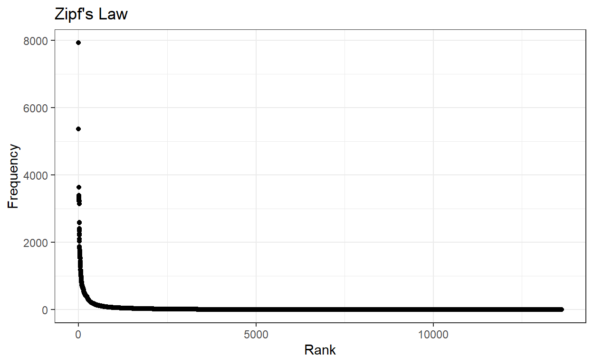
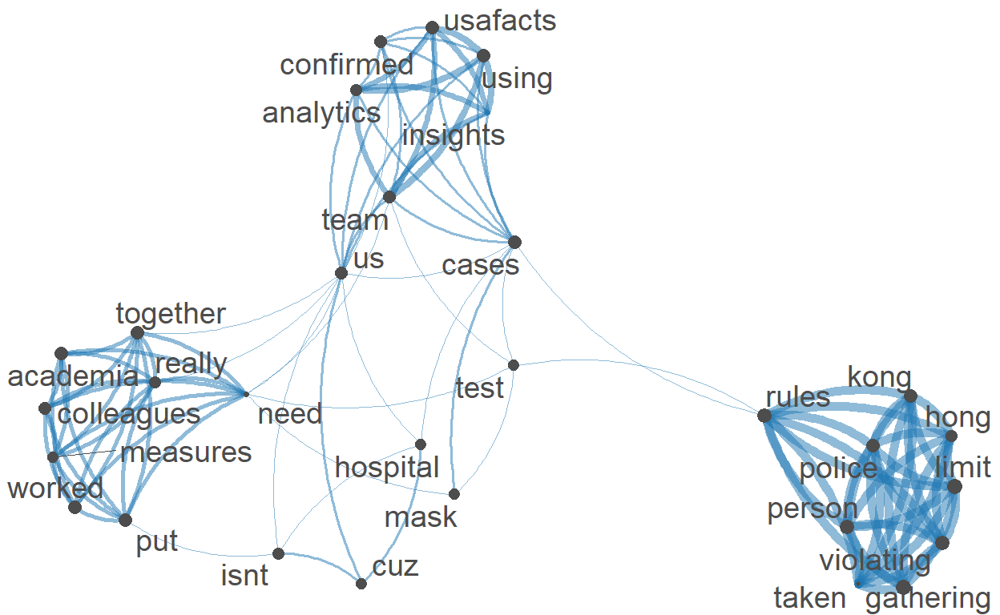
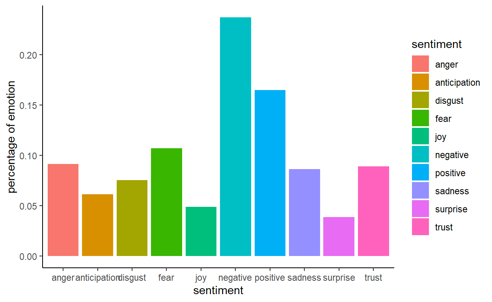

Sentiment Analysis.
skim(twitter_data)
| Name | twitter_data |
| Number of rows | 17943 |
| Number of columns | 90 |
| _______________________ | |
| Column type frequency: | |
| character | 58 |
| logical | 10 |
| numeric | 18 |
| POSIXct | 4 |
| ________________________ | |
| Group variables | None |
Variable type: character
| skim_variable | n_missing | complete_rate | min | max | empty | n_unique | whitespace |
|---|---|---|---|---|---|---|---|
| user_id | 0 | 1.00 | 6 | 20 | 0 | 13493 | 0 |
| status_id | 0 | 1.00 | 20 | 20 | 0 | 17943 | 0 |
| screen_name | 0 | 1.00 | 3 | 15 | 0 | 13493 | 0 |
| text | 0 | 1.00 | 16 | 918 | 0 | 6942 | 0 |
| source | 0 | 1.00 | 4 | 76 | 0 | 355 | 0 |
| reply_to_status_id | 17082 | 0.05 | 20 | 20 | 0 | 846 | 0 |
| reply_to_user_id | 16971 | 0.05 | 7 | 20 | 0 | 763 | 0 |
| reply_to_screen_name | 16971 | 0.05 | 2 | 15 | 0 | 763 | 0 |
| hashtags | 3071 | 0.83 | 2 | 350 | 0 | 4379 | 0 |
| symbols | 17861 | 0.00 | 3 | 76 | 0 | 24 | 0 |
| urls_url | 14431 | 0.20 | 8 | 122 | 0 | 2511 | 0 |
| urls_t.co | 14431 | 0.20 | 23 | 119 | 0 | 2927 | 0 |
| urls_expanded_url | 14431 | 0.20 | 17 | 621 | 0 | 2696 | 0 |
| media_url | 14880 | 0.17 | 46 | 87 | 0 | 2674 | 0 |
| media_t.co | 14880 | 0.17 | 23 | 23 | 0 | 2690 | 0 |
| media_expanded_url | 14880 | 0.17 | 58 | 70 | 0 | 2680 | 0 |
| media_type | 14880 | 0.17 | 5 | 5 | 0 | 1 | 0 |
| ext_media_url | 14880 | 0.17 | 46 | 187 | 0 | 2674 | 0 |
| ext_media_t.co | 14880 | 0.17 | 23 | 95 | 0 | 2690 | 0 |
| ext_media_expanded_url | 14880 | 0.17 | 58 | 283 | 0 | 2680 | 0 |
| mentions_user_id | 4424 | 0.75 | 7 | 721 | 0 | 3302 | 0 |
| mentions_screen_name | 4424 | 0.75 | 3 | 542 | 0 | 3302 | 0 |
| lang | 0 | 1.00 | 2 | 2 | 0 | 1 | 0 |
| quoted_status_id | 17408 | 0.03 | 19 | 20 | 0 | 501 | 0 |
| quoted_text | 17408 | 0.03 | 8 | 1773 | 0 | 501 | 0 |
| quoted_source | 17408 | 0.03 | 6 | 25 | 0 | 30 | 0 |
| quoted_user_id | 17408 | 0.03 | 7 | 20 | 0 | 452 | 0 |
| quoted_screen_name | 17408 | 0.03 | 2 | 15 | 0 | 452 | 0 |
| quoted_name | 17408 | 0.03 | 1 | 218 | 0 | 452 | 0 |
| quoted_location | 17500 | 0.02 | 2 | 172 | 0 | 265 | 0 |
| quoted_description | 17417 | 0.03 | 13 | 514 | 0 | 443 | 0 |
| retweet_status_id | 6242 | 0.65 | 20 | 20 | 0 | 2737 | 0 |
| retweet_text | 6242 | 0.65 | 41 | 917 | 0 | 2734 | 0 |
| retweet_source | 6242 | 0.65 | 4 | 76 | 0 | 86 | 0 |
| retweet_user_id | 6242 | 0.65 | 7 | 20 | 0 | 1645 | 0 |
| retweet_screen_name | 6242 | 0.65 | 3 | 15 | 0 | 1645 | 0 |
| retweet_name | 6242 | 0.65 | 1 | 279 | 0 | 1644 | 0 |
| retweet_location | 7540 | 0.58 | 2 | 204 | 0 | 875 | 0 |
| retweet_description | 6346 | 0.65 | 4 | 808 | 0 | 1589 | 0 |
| place_url | 17831 | 0.01 | 56 | 56 | 0 | 92 | 0 |
| place_name | 17831 | 0.01 | 5 | 40 | 0 | 91 | 0 |
| place_full_name | 17831 | 0.01 | 6 | 40 | 0 | 92 | 0 |
| place_type | 17831 | 0.01 | 3 | 7 | 0 | 4 | 0 |
| country | 17831 | 0.01 | 5 | 26 | 0 | 17 | 0 |
| country_code | 17831 | 0.01 | 2 | 2 | 0 | 17 | 0 |
| geo_coords | 0 | 1.00 | 5 | 24 | 0 | 6 | 0 |
| coords_coords | 0 | 1.00 | 5 | 24 | 0 | 6 | 0 |
| bbox_coords | 0 | 1.00 | 23 | 141 | 0 | 93 | 0 |
| status_url | 0 | 1.00 | 50 | 62 | 0 | 17943 | 0 |
| name | 2 | 1.00 | 1 | 348 | 0 | 13270 | 0 |
| location | 5727 | 0.68 | 1 | 226 | 0 | 4514 | 0 |
| description | 2449 | 0.86 | 1 | 1209 | 0 | 11324 | 0 |
| url | 11470 | 0.36 | 20 | 32 | 0 | 4366 | 0 |
| profile_url | 11470 | 0.36 | 20 | 32 | 0 | 4366 | 0 |
| profile_expanded_url | 11473 | 0.36 | 12 | 100 | 0 | 4301 | 0 |
| profile_banner_url | 4458 | 0.75 | 54 | 68 | 0 | 10221 | 0 |
| profile_background_url | 7438 | 0.59 | 48 | 49 | 0 | 20 | 0 |
| profile_image_url | 0 | 1.00 | 58 | 140 | 0 | 12872 | 0 |
Variable type: logical
| skim_variable | n_missing | complete_rate | mean | count |
|---|---|---|---|---|
| is_quote | 0 | 1.00 | 0.03 | FAL: 17408, TRU: 535 |
| is_retweet | 0 | 1.00 | 0.65 | TRU: 11701, FAL: 6242 |
| quote_count | 17943 | 0.00 | NaN | : |
| reply_count | 17943 | 0.00 | NaN | : |
| ext_media_type | 17943 | 0.00 | NaN | : |
| quoted_verified | 17408 | 0.03 | 0.43 | FAL: 305, TRU: 230 |
| retweet_verified | 6242 | 0.65 | 0.47 | FAL: 6174, TRU: 5527 |
| protected | 0 | 1.00 | 0.00 | FAL: 17943 |
| verified | 0 | 1.00 | 0.04 | FAL: 17161, TRU: 782 |
| account_lang | 17943 | 0.00 | NaN | : |
Variable type: numeric
| skim_variable | n_missing | complete_rate | mean | sd | p0 | p25 | p50 | p75 | p100 | hist |
|---|---|---|---|---|---|---|---|---|---|---|
| display_text_width | 0 | 1.00 | 160.19 | 51.33 | 11 | 140.0 | 140 | 150.0 | 310 | ▁▁▇▁▁ |
| favorite_count | 0 | 1.00 | 1.76 | 36.34 | 0 | 0.0 | 0 | 0.0 | 2560 | ▇▁▁▁▁ |
| retweet_count | 0 | 1.00 | 267.42 | 635.04 | 0 | 1.0 | 4 | 142.0 | 7669 | ▇▁▁▁▁ |
| quoted_favorite_count | 17408 | 0.03 | 4300.59 | 17793.73 | 0 | 16.5 | 172 | 1822.0 | 284520 | ▇▁▁▁▁ |
| quoted_retweet_count | 17408 | 0.03 | 1072.92 | 3612.48 | 0 | 5.0 | 53 | 550.5 | 41710 | ▇▁▁▁▁ |
| quoted_followers_count | 17408 | 0.03 | 1265361.30 | 6196086.27 | 1 | 3048.0 | 25482 | 178246.0 | 79078337 | ▇▁▁▁▁ |
| quoted_friends_count | 17408 | 0.03 | 3150.25 | 8832.52 | 0 | 442.5 | 1057 | 2816.0 | 111186 | ▇▁▁▁▁ |
| quoted_statuses_count | 17408 | 0.03 | 77173.84 | 163889.98 | 39 | 5182.0 | 19047 | 60848.5 | 1244017 | ▇▁▁▁▁ |
| retweet_favorite_count | 6242 | 0.65 | 847.39 | 1957.07 | 0 | 9.0 | 131 | 1710.0 | 32501 | ▇▁▁▁▁ |
| retweet_retweet_count | 6242 | 0.65 | 409.17 | 748.52 | 0 | 4.0 | 44 | 475.0 | 7669 | ▇▁▁▁▁ |
| retweet_followers_count | 6242 | 0.65 | 167132.98 | 812246.84 | 0 | 1868.0 | 4743 | 36713.0 | 16927467 | ▇▁▁▁▁ |
| retweet_friends_count | 6242 | 0.65 | 2446.33 | 7702.08 | 0 | 535.0 | 832 | 2419.0 | 280553 | ▇▁▁▁▁ |
| retweet_statuses_count | 6242 | 0.65 | 58646.57 | 126852.08 | 2 | 2179.0 | 10799 | 50797.0 | 3221526 | ▇▁▁▁▁ |
| followers_count | 0 | 1.00 | 19568.67 | 322503.18 | 0 | 109.0 | 568 | 2006.0 | 16927467 | ▇▁▁▁▁ |
| friends_count | 0 | 1.00 | 1772.59 | 7513.42 | 0 | 139.0 | 579 | 1728.5 | 568088 | ▇▁▁▁▁ |
| listed_count | 0 | 1.00 | 99.29 | 767.37 | 0 | 0.0 | 4 | 28.0 | 37942 | ▇▁▁▁▁ |
| statuses_count | 0 | 1.00 | 64414.02 | 144797.32 | 1 | 3259.0 | 15189 | 75375.0 | 3221525 | ▇▁▁▁▁ |
| favourites_count | 0 | 1.00 | 42616.78 | 89549.84 | 0 | 860.0 | 8151 | 45395.5 | 1389145 | ▇▁▁▁▁ |
Variable type: POSIXct
| skim_variable | n_missing | complete_rate | min | max | median | n_unique |
|---|---|---|---|---|---|---|
| created_at | 0 | 1.00 | 2022-03-24 06:44:16 | 2022-03-25 20:57:13 | 2022-03-25 03:32:37 | 16695 |
| quoted_created_at | 17408 | 0.03 | 2017-08-08 15:42:11 | 2022-03-25 20:33:57 | 2022-03-24 16:05:47 | 501 |
| retweet_created_at | 6242 | 0.65 | 2020-03-13 16:08:50 | 2022-03-25 20:52:46 | 2022-03-24 17:30:00 | 2712 |
| account_created_at | 0 | 1.00 | 2006-12-12 21:09:52 | 2022-03-25 18:38:05 | 2015-06-23 21:17:20 | 13493 |
twitter_data$text[1:10]
[1] "@uk_sf_writer @BBC For the past 2 years @BBCNews have consistently framed #COVID news in the most negative way possible. I have been the following the figures and can inform anyone who is interested that the recent rise in infections has peaked and will go down rapidly next week."
[2] "2022 has brought new #Covid narrative - \r\n1 #Virus getting weaker \r\n2 #Vaccine situation fine as is\r\n3 We don't need #publichealth measures any more\r\n\r\nReally?\r\nSome of my colleagues from academia, @WHO & @ApiJectCorp worked to put together this <U+0001F9F5> \r\n#50CovidBeliefs"
[3] "Today, the Government of <U+0001F1E8><U+0001F1E6> is investing in the health care system to help our provincial and territorial partners expedite the processing of delayed surgeries. This is an important 1st step in repairing #COVID damages and protecting the accessibility of healthcare in <U+0001F1E8><U+0001F1E6>"
[4] "Take precautions. A new variant is coming. #COVID https://t.co/ggVR8O2Ty9"
[5] "2022 has brought new #Covid narrative - \r\n1 #Virus getting weaker \r\n2 #Vaccine situation fine as is\r\n3 We don't need #publichealth measures any more\r\n\r\nReally?\r\nSome of my colleagues from academia, @WHO & @ApiJectCorp worked to put together this <U+0001F9F5> \r\n#50CovidBeliefs"
[6] "Daily Covid Deaths per 1K Population by County For GA 2022-03-22: Latest Covid Insights by Our Analytics Team using USAFacts #datavisualization #datascience #analytics #healthtech #data #covid19 #publichealth #covid #globalhealth #RStats https://t.co/vbeS4sSt2j"
[7] "Daily US Covid Deaths by County For CA 2022-03-22: Latest Covid Insights by Our Analytics Team using USAFacts #datavisualization #datascience #analytics #healthtech #data #covid19 #publichealth #covid #globalhealth #RStats https://t.co/ZAbfTaGCeS"
[8] "Total Covid Death Distribution by County For CA 2022-03-22: Latest Covid Insights by Our Analytics Team using USAFacts #datavisualization #datascience #analytics #healthtech #data #covid19 #publichealth #covid #globalhealth #RStats https://t.co/1da0nYXgD9"
[9] "Daily US Covid Deaths by County For NC 2022-03-22: Latest Covid Insights by Our Analytics Team using USAFacts #datavisualization #datascience #analytics #healthtech #data #covid19 #publichealth #covid #globalhealth #RStats https://t.co/7uHHCcf1MY"
[10] "Total Covid Death Distribution by County For WA 2022-03-22: Latest Covid Insights by Our Analytics Team using USAFacts #datavisualization #datascience #analytics #healthtech #data #covid19 #publichealth #covid #globalhealth #RStats https://t.co/RsQdTrdsOn" varibales that might be useful in the future analysis : created_at, screen_name, text, source, is_retweet, retweet_count, hashtags, symbols, mentions_screen_name, quoted_text, quoted_created_at, quoted_screen_name, quoted_name, quoted_followers_count, quoted_location, quoted_description, retweet_text, retweet_created_at, retweet_screen_name, retweet_name, retweet_followers_count, retweet_friends_count, retweet_statuses_count, retweet_location, retweet_description, place_name, place_type, place_full_name, country, country_code, geo_coords, coords_coords, bbox_coords, name, location, description,
clean <- function (text) {
str_remove_all(text," ?(f|ht)(tp)(s?)(://)(.*)[.|/](.*)") %>%
# Remove mentions
str_remove_all("@[[:alnum:]_]*") %>%
# Remove hash tags
str_remove_all("#[[:alnum:]_]+") %>%
# Replace "&" character reference with "and"
str_replace_all("&", "and") %>%
# Remove punctuation, using a standard character class
str_remove_all("[[:punct:]]") %>%
# remove digits
str_remove_all("[[:digit:]]") %>%
# Remove "RT: " from beginning of retweets
str_remove_all("^RT:? ") %>%
# Replace any newline characters with a space
str_replace_all("\\\n|\\\r", " ") %>%
# remove strings like "<U+0001F9F5>"
str_remove_all("<.*?>") %>%
# Make everything lowercase
str_to_lower() %>%
# Remove any trailing white space around the text and inside a string
str_squish()
}
twitter_data$text <- clean(twitter_data$text)
twitter_data$retweet_text <- clean(twitter_data$retweet_text)
looking at the cleaned tweets
twitter_data$text[1:10]
[1] "for the past years have consistently framed news in the most negative way possible i have been the following the figures and can inform anyone who is interested that the recent rise in infections has peaked and will go down rapidly next week"
[2] "has brought new narrative getting weaker situation fine as is we dont need measures any more really some of my colleagues from academia and worked to put together this"
[3] "today the government of is investing in the health care system to help our provincial and territorial partners expedite the processing of delayed surgeries this is an important st step in repairing damages and protecting the accessibility of healthcare in"
[4] "take precautions a new variant is coming"
[5] "has brought new narrative getting weaker situation fine as is we dont need measures any more really some of my colleagues from academia and worked to put together this"
[6] "daily covid deaths per k population by county for ga latest covid insights by our analytics team using usafacts"
[7] "daily us covid deaths by county for ca latest covid insights by our analytics team using usafacts"
[8] "total covid death distribution by county for ca latest covid insights by our analytics team using usafacts"
[9] "daily us covid deaths by county for nc latest covid insights by our analytics team using usafacts"
[10] "total covid death distribution by county for wa latest covid insights by our analytics team using usafacts" converting the character vectors, text,
retweet_text to a single corpus
finding the word frequencies in the documents/ tweets
word_counts <- as.data.frame(sort(colSums(text),dec=T))
colnames(word_counts) <- c("Frequency")
word_counts$word <- row.names(word_counts)
word_counts$Rank <- c(1:ncol(text))
head(word_counts)
Frequency word Rank
covid 7927 covid 1
people 5364 people 2
cases 3632 cases 3
person 3398 person 4
new 3368 new 5
rules 3346 rules 6counting the words that have frequency leass than 50
sum(word_counts$Frequency < 50)
[1] 12368looking at how word frequencies are distributed
ggplot(word_counts, mapping = aes(x = Rank, y = Frequency)) +
geom_point() +
labs(title = "Zipf's Law", x = "Rank", y = "Frequency") +
theme_bw()

Having seen what we are working with here, we might start to think that our matrix still contains too many uninformative or very rare terms. We can trim our DFM in two different ways related to feature frequencies using dfm_trim().
# let's create a nicer dfm by limiting to words that appear frequently and are in more than 30% of tweets
#text_dfm <- dfm_trim(text, min_termfreq = 50)
text_dfm <- dfm_trim(text, min_termfreq = .3, docfreq_type = "prop")
# create fcm from dfm
text_fcm <- fcm(text_dfm)
# check the dimensions (i.e., the number of rows and the number of columnns)
# of the matrix we created
dim(text_fcm)
[1] 13621 13621head(text_fcm, 10)
Feature co-occurrence matrix of: 10 by 13,621 features.
features
features past years consistently framed news negative way
past 3 111 15 15 16 16 15
years 0 58 15 15 20 17 66
consistently 0 0 0 15 15 15 15
framed 0 0 0 0 15 15 15
news 0 0 0 0 13 16 16
negative 0 0 0 0 0 2 18
way 0 0 0 0 0 0 13
possible 0 0 0 0 0 0 0
following 0 0 0 0 0 0 0
figures 0 0 0 0 0 0 0
features
features possible following figures
past 15 15 15
years 411 18 15
consistently 15 15 15
framed 15 15 15
news 15 17 15
negative 15 20 15
way 16 15 15
possible 2 15 15
following 0 0 15
figures 0 0 0
[ reached max_nfeat ... 13,611 more features ]# pull the top features
myFeatures <- names(topfeatures(text_fcm, 30))
# retain only those top features as part of our matrix
even_text_fcm <- fcm_select(text_fcm, pattern = myFeatures, selection = "keep")
# check dimensions
dim(even_text_fcm)
[1] 30 30# compute size weight for vertices in network
size <- log(colSums(even_text_fcm))
# create plot
textplot_network(even_text_fcm, vertex_size = size / max(size) * 3)

The function get_sentiments() allows us to get specific sentiment lexicons with the appropriate measures for each one. This is a function in tidytext package
This dataset nrc was published in Saif M. Mohammad and Peter Turney. (2013), ``Crowdsourcing a Word-Emotion Association Lexicon.’’ Computational Intelligence, 29(3): 436-465.
nrc <- get_sentiments("nrc")
this dataset afinn was published by Finn Årup Nielsen (http://www2.imm.dtu.dk/pubdb/views/publication_details.php?id=6010)
afinn <- get_sentiments("afinn")
this dataset bing was published by Bing Liu and collaborators,https://www.cs.uic.edu/~liub/FBS/sentiment-analysis.html
bing <- get_sentiments("bing")
sentiment analysis
The nrc lexicon categorizes words in a binary fashion (“yes”/“no”) into categories of positive, negative, anger, anticipation, disgust, fear, joy, sadness, surprise, and trust.
(nrc <- word_counts %>%
inner_join(nrc, by = "word") %>%
group_by(sentiment) %>%
summarise(frequency = n()))
# A tibble: 10 x 2
sentiment frequency
<chr> <int>
1 anger 414
2 anticipation 380
3 disgust 315
4 fear 515
5 joy 302
6 negative 991
7 positive 971
8 sadness 430
9 surprise 210
10 trust 546 ggplot(nrc, aes(x = sentiment, y = frequency/sum(frequency), fill = sentiment))+
geom_bar(stat='identity')+
labs(y = "percentage of emotion")+
theme_classic()

The bing lexicon categorizes words in a binary fashion into positive and negative categories.
word_counts %>%
inner_join(bing, by = "word") %>%
group_by(sentiment) %>%
summarise(frequency = n())
# A tibble: 2 x 2
sentiment frequency
<chr> <int>
1 negative 1071
2 positive 613The AFINN lexicon assigns words with a score that runs between -5 and 5, with negative scores indicating negative sentiment and positive scores indicating positive sentiment.
word_counts %>%
inner_join(afinn, by = "word") %>%
group_by(value) %>%
summarise(frequency = n()) %>%
arrange(desc(frequency))
# A tibble: 10 x 2
value frequency
<dbl> <int>
1 -2 372
2 2 236
3 -1 159
4 1 148
5 -3 115
6 3 71
7 -4 20
8 4 19
9 -5 4
10 5 3most common positive and negative words
head(bing_word_counts <- word_counts %>%
inner_join(get_sentiments("bing")) %>%
select(word, Frequency, sentiment), 30)
word Frequency sentiment
1 limit 3277 negative
2 death 1702 negative
3 worked 1557 positive
4 fine 1555 positive
5 weaker 1542 negative
6 positive 1042 positive
7 like 996 positive
8 died 797 negative
9 safe 726 positive
10 symptoms 703 negative
11 virus 699 negative
12 recovery 661 positive
13 protect 635 positive
14 revival 620 positive
15 rapid 613 positive
16 work 534 positive
17 best 500 positive
18 available 419 positive
19 break 408 negative
20 bravo 400 positive
21 right 384 positive
22 dead 382 negative
23 top 381 positive
24 mar 346 negative
25 free 340 positive
26 sick 340 negative
27 risk 337 negative
28 good 327 positive
29 well 289 positive
30 better 265 positivehead(nrc_word_counts <- word_counts %>%
inner_join(get_sentiments("nrc")) %>%
filter(sentiment %in% c("positve", "negative")) %>%
select(word, Frequency, sentiment), 30)
word Frequency sentiment
1 death 1702 negative
2 pandemic 1287 negative
3 government 710 negative
4 virus 699 negative
5 disease 670 negative
6 hit 560 negative
7 wear 478 negative
8 case 421 negative
9 shot 408 negative
10 mar 346 negative
11 sick 340 negative
12 risk 337 negative
13 war 335 negative
14 infection 253 negative
15 spent 246 negative
16 crisis 225 negative
17 sadly 224 negative
18 fraud 221 negative
19 fight 216 negative
20 negative 215 negative
21 refused 214 negative
22 enforcement 201 negative
23 demand 195 negative
24 hate 193 negative
25 worse 191 negative
26 suffering 190 negative
27 abandoned 187 negative
28 illness 177 negative
29 bad 171 negative
30 flu 170 negative